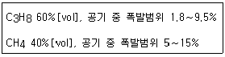

가스기능사 (2002-07-21 기출문제)
1과목: 가스안전관리
1. 다음 가스 중 공기중 폭발한계가 가장 넓은 것은?
- 프로판
- 수소
- 부탄
- 아세틸렌
(정답률: 70%)

2. 가스를 사용하려 하는데 밸브에 얼음이 붙었다.어떻게 조치를 하면 되겠는가?
- 40℃ 이하의 물수건을 도포
- 80℃ 의 램프로 조치
- 100℃ 의 뜨거운 물로 도포
- 성냥불로 조치
(정답률: 93%)
3. 폭발성 혼합가스의 폭발 2등급 안전 간격은?
- 0.1∼0.3 ㎜
- 0.8∼1.0 ㎜
- 0.4∼0.6 ㎜
- 1.5∼2.0 ㎜
(정답률: 52%)
4. 다음은 가스누출 경보기의 기능에 대하여 서술한 것이다. 옳지 아니한 것은?
- 가스의 누출을 검지하여 그 농도를 지시함과 동시에 경보를 울린다.
- 폭발하한계의 1/2 이하에서 자동적으로 경보를 울린다.
- 경보를 울린후에도 가스 농도가 변하더라도 계속 경보를 한다.
- 담배 연기 등의 잡가스에 울리지 아니한다.
(정답률: 62%)
5. 고압가스 판매의 시설기준으로 옳지 않은 것은?
- 충전용기의 보관실은 불연재료를 사용할 것
- 판매시설에는 압력계 또는 계량기를 갖출 것
- 용기 보관실은 그 경계를 표시하고 외부의 눈에 안띄는 곳에 경계표지를 할 것.
- 가연성 가스의 충전 용기보관실의 전기설비는 방폭 성능을 가진 것 일 것.
(정답률: 84%)
6. 가스계량기는 절연조치를 하지 아니한 전선과는 몇 ㎝ 이상 거리를 두는가?
- 150㎝
- 30㎝
- 15㎝
- 5㎝
(정답률: 66%)
7. 시안화수소의 중합 방지제로 옳지 않은 것은?
- 암모니아
- 황산
- 염화칼슘
- 인산
(정답률: 57%)
8. LPG 용기의 안전점검 기준으로서 틀린 것은?
- 용기의 부식여부를 확인할 것
- 용기캡이 씌워져 있거나 프로텍터가 부착되어 있을것
- 밸브의 그랜드 너트를 고정핀으로 이탈을 방지한 것인가 확인할 것
- 완성검사 도래 여부를 확인할 것
(정답률: 80%)
9. 가스의 폭발범위에 영향을 주는 인자가 아닌 것은?
- 비열
- 압력
- 온도
- 가스량
(정답률: 76%)
10. 방류둑의 성토는 수평에 대하여 몇 도 이하의 기울기로 하는가?
- 30°
- 45°
- 60°
- 75°
(정답률: 79%)
11. 다음 중 공기 액화 분리기의 운전을 중지하고 액화 산소를 방출하여야 하는 경우는?
- 액화 산소 5ℓ 중 아세틸렌이 0.5㎎이 넘는 경우
- 액화 산소 5ℓ 중 아세틸렌이 0.⑤㎎이 넘는 경우
- 액화 산소 5ℓ 중 탄화 수소의 탄소 질량이 500㎎이 넘는 경우
- 액화 산소 5ℓ 중 탄화 수소의 탄소 질량이 50㎎이 넘는 경우
(정답률: 41%)
12. 공기 액화 분리장치에서 폭발의 원인이 아닌 것은?
- 공기 취입구에서 아세틸렌의 침입
- 윤활유 분해에 의한 탄화수소의 생성
- 산화질소(NO), 과산화질소(NO2)혼입
- 공기중의 산소혼입
(정답률: 59%)
13. 아세틸렌을 용기에 충전시, 미리 용기에 다공질물을 고루 채운후 침윤 및 충전을 해야 하는데 이 때 다공도는 얼마로 해야 하는가?
- 75% 이상 92% 미만
- 70% 이상 95% 미만
- 62% 이상 75% 미만
- 92% 이상
(정답률: 84%)
14. 다음 가스 중 폭발 한계가 가장 넓은 것은?
- 메탄
- 수소
- 프로판
- 부탄
(정답률: 67%)
15. 해당 가스의 제독제 연결이 틀린 것은?
- 암모니아 - 물
- 산화에틸렌 - 물
- 포스겐 - 물
- 염화메탄 - 물
(정답률: 68%)
16. 과산화수소와 동.망간 등의 접촉시 폭발은?
- 분해폭발
- 중합폭발
- 융합폭발
- 산화폭발
(정답률: 32%)
17. LP가스의 용기 보관실 바닥 면적이 3m2라면 통풍구의 크기는 얼마로 하여야 하는가?
- 1100 cm2
- 900 cm2
- 700 cm2
- 500 cm2
(정답률: 84%)
18. 다음 아세틸렌 취급방법 중 틀린 것은?
- 저장소는 화기 엄금을 명기한다.
- 가스출구 동결시 60℃이하의 온수로 녹인다.
- 용기는 산소병과 같이 저장하지 않는다.
- 저장소는 통풍이 양호한 구조이어야 한다.
(정답률: 85%)
19. 수소와 산소의 혼합비가 얼마일 때 수소 폭명기라고 하는가?
- 1 : 4
- 2 : 1
- 1 : 1
- 1.5 : 1
(정답률: 72%)
20. 도시가스 성분을 분석하였다. 그 성분이 아래와 같을 때 폭발 하한값으로 옳은 것은?

- 2.4%
- 3.6%
- 4.8%
- 5.5%
(정답률: 35%)
21. 용기의 안전장치인 가용전의 재료로서 사용되지 않는 것은?
- 구리
- 알루미늄
- 망간
- 주석
(정답률: 49%)
22. 다음 배관 중에서 역화 방지 장치를 설치해야 할 곳은?
- 가연성 가스 압축기와 충전용 주관 사이.
- 가연성 가스 압축기와 오토클레이브 사이.
- 아세틸렌 압축기의 유분리기와 고압 건조기 사이.
- 암모니아 또는 메탄올의 합성탑과 압축기 사이의 배관.
(정답률: 43%)
23. 고압가스 충전용기를 운반시 혼합적재가 가능한 것은?
- 염소와 아세틸렌
- 아세틸렌과 암모니아
- 염소와 암모니아
- 충전용기와 소방법이 정하는 위험물
(정답률: 44%)
24. 시안화수소를 장기간 저장하지 못하게 하는 이유는?
- 분해폭발
- 산화폭발
- 중합폭발
- 압력폭발
(정답률: 46%)
25. 용기에 아세틸렌을 넣으려 한다.옳은 방법은?
- 용기에 압력기로 압력을 주면서 넣는다.
- 용기에 해면 모양인 다공성 물질을 넣고 거기에 아세톤을 침수시켜 이에 아세틸렌을 압축 흡수 시킨다.
- 용기에 물이 들어가지 않도록 거꾸로 하여 물속에 넣고 거기에 아세틸렌의 관을 삽입하여 조용히 넣는다.
- 아세틸렌 청정기에서 용기에 직접 넣는다.
(정답률: 70%)
26. 액화석유가스의 안전 및 사업관리법 에서 액화석유가스 저장소란 내용적 1ℓ 미만의 용기에 충전된 액화석유가스를 저장할 경우 총량이 몇 ㎏이상 저장하는 장소를 말하는가?
- 100㎏
- 150㎏
- 200㎏
- 250㎏
(정답률: 43%)
27. 가스를 사용하는 일반가정이나 음식점 등에서 호스가 절단 또는 파손으로 다량 가스누출시 사고예방을 위해 신속하게 자동으로 가스누출을 차단하기 위해 설치하는 제품은?
- 중간밸브
- 체크밸브
- 나사콕크
- 휴즈콕크
(정답률: 59%)
28. 제조소의 긴급용 벤트스택 방출구 위치는 작업원이 항시 통행하는 통로로 부터 얼마나 이격 되어야 하는가?
- 5m 이상
- 10m 이상
- 15m 이상
- 관계없다
(정답률: 57%)
29. 고압가스(산소,아세틸렌,수소)의 품질검사는?
- 1월 1회
- 1주 1회
- 3일 1회
- 1일 1회
(정답률: 65%)
30. 아세틸렌 용기의 기밀시험은 최고 충전압력의 얼마로 해야 하는가?
- 0.8배
- 1.1배
- 1.5배
- 1.8배
(정답률: 31%)
2과목: 가스장치 및 기기
31. 양정 20m, 송출량 0.25m3/min, 펌프효율은 65%인 터어빈 펌프의 축동력은 얼마인가?
- 1.257 ㎾
- 1.372 ㎾
- 1.572 ㎾
- 1.723 ㎾
(정답률: 28%)
32. 다음 재료 중 왕복식 압축기의 피스톤 로드 시일에 사용 되지 않는 패킹 재료는?
- 화이트 메탈
- 테플론
- 카아본
- 연질고무
(정답률: 53%)
33. 보온재의 구비 조건 중 맞지 않는 것은?
- 열전도율이 적을 것
- 흡습, 흡수성이 클 것
- 비중이 적고 적당한 강도가 있을 것
- 시공이 용이할 것
(정답률: 56%)
34. 용기 재료 구비조건으로 적당하지 않는 것은?
- 경량이고 충분한 흡습성이 있을 것
- 점성강도를 가질 것
- 내식성 내마모성이 있을 것
- 용접성 및 가공성이 좋을 것
(정답률: 63%)
35. 다량의 메탄을 액화시키려면 어떤 액화사이클을 사용해야 하는가?
- 가스케이드 사이클
- 필립스 사이클
- 캐피자 사이클
- 클루우드 사이클
(정답률: 53%)
36. 공기 액화 분리 장치에서 액화되어 나오는 가스의 순서로 맞는 것은?
- O2 - N2 - Ar
- N2 - O2 - Ar
- O2 - Ar - N2
- N2 - Ar - O2
(정답률: 40%)
37. 버어너에서의 역화의 원인과 관계가 잘못된 것은?
- 부식에 의해 염공이 커졌을 때
- 연소기의 콕크가 충분히 열리지 않았거나 가스압력이 저하 했을 때
- 연소가스의 배출 불충분이나 환기가 불충분 했을 때
- 버어너의 가열로 혼합가스의 온도가 상승 했을 경우
(정답률: 25%)
38. 다음 가스 분석법중 흡수 분석법에 해당되지 않는 것은?
- 헴펠법
- 산화동법
- 올쟈트법
- 게겔법
(정답률: 62%)
39. 다음 압력계 중 탄성식이 아닌 것은?
- 부르돈관식
- 벨로우즈식
- 부이식
- 캡슐식
(정답률: 36%)
40. 저장조 상부로부터 끄집어 낸 압력과 저장조 하부로부터 끄집어 낸 압력의 차로써 액면을 측정하는 것은?
- 부자식 액면계
- 차압식 액면계
- 편위식 액면계
- 유리관식 액면계
(정답률: 70%)
41. 가스 공급을 위한 시설로 필요 없는 것은?
- 가스홀더
- 압송기
- 정적기
- 정압기
(정답률: 58%)
42. 다음 공기 액화분리 장치에서 건조제로 주로 쓰이는 물질이 아닌 것은?
- 가성소다
- 실리카겔
- 활성알루미나
- 사염화탄소
(정답률: 44%)
43. 고압용기의 내용적이 1⑤ℓ 인 암모니아 용기에 법정 가스충전량은 몇 ㎏인가? (단, 가스상수 C값은 1.86 이다.)
- 20.5㎏
- 45.5㎏
- 56.5㎏
- 117.5㎏
(정답률: 69%)
44. LP가스 이송설비 중 압축기의 부속장치로서 토출측과 흡입측을 전환시키며 액송과 가스회수를 한 동작으로 조작이 용이한 것은 어느 것인가?
- 액트랩
- 액가스분리기
- 전자밸브
- 사로밸브
(정답률: 58%)
45. 2000[rpm]으로 회전하는 펌프를 3500[rpm]으로 변환하는 경우 펌프의 유량과 양정은 몇 배가 되는가?
- 유량 : 2.65 , 양정 : 4.12
- 유량 : 3.06 , 양정 : 1.75
- 유량 : 3.06 , 양정 : 5.36
- 유량 : 1.75 , 양정 : 3.06
(정답률: 56%)
3과목: 가스일반
46. 주기율의 0 족에 속하는 불활성 가스의 성질이 아닌 것은?
- 상온에서 기체이며, 단 원자 분자이다.
- 다른 원소와 잘 화합한다.
- 상온에서 무색, 무미, 무취의 기체이다.
- 무색, 무취의 기체로 방전관에 넣어 방전시키면 특유의 색을 낸다.
(정답률: 71%)
47. 기체상태에 있는 어떤 물질의 분자량을 결정하기에 알맞은 실험적인 자료로서 온도와 압력 외에 필요한 것은?
- 밀도
- 열량
- 질량
- 비중
(정답률: 42%)
48. 다음 중 열(熱)에 대한 설명이 틀린 것은?
- 비열이 큰 물질은 열용량이 크다.
- 1 ㎈ 1000배의 열량을 1 ㎉라 한다.
- 열은 고온에서 저온으로 흐른다.
- 비열은 물보다 공기가 크다.
(정답률: 68%)
49. 다음 중 수성가스의 조성에 해당하는 것은?
- CO + H2
- CO2 + H2
- CO + N2
- CO2 + N2
(정답률: 57%)
50. 산소(O2)성질에 대한 설명 중 틀린 것은?
- 상온에서 무색, 무취의 기체이며 물에 약간 녹는다.
- 액체 산소는 비중이 1.13의 푸른 액체로서 진공 중에서 증발시키면 온도가 강하하여 일부는 고체로 된다.
- 산소 중이나 공기 중에서 무성 방전을 하면 오존이 된다.
- 화학적으로 활발한 원소로 할로겐 원소, 백금 등과 화합하여 산화물을 만든다.
(정답률: 41%)
51. 압력단위 환산이 맞는 것은?
- 절대압력 = 게이지압력 + 대기압
- 게이지압력 = 절대압력 + 대기압
- 수주 m은 mAq와 다르다.
- 대기압은 14.2 psi 이다.
(정답률: 70%)
52. 다음 가스 중 공기 중에 누설시 폭발 위험이 가장 큰 가스는?
- C3H8
- C4H10
- CH4
- C2H2
(정답률: 59%)
53. 산소가스가 27℃에서 130㎏/cm2의 압력으로 50kg이 충전되어 있다. 이 때 부피는 몇 m3 인가? (단, 산소의 정수는 26.5kg· m/kg.K)
- 0.30m3
- 0.25m3
- 0.28m3
- 0.43m3
(정답률: 24%)
54. 다음 중 가장 작은 압력은?
- 0.1㎏/㎜2
- 1㎏/cm2
- 1000㎏/m2
- 1lb/in2(psi)
(정답률: 48%)
55. 환원성이 강하여 금속제련 시 환원제로 쓰이는 가스는?
- 수소
- 산소
- 프로판
- 부탄
(정답률: 52%)
56. 수소취성을 방지하기 위해 강에 첨가하는 원소로서 옳지 않은 것은?
- Cr
- W
- Mo
- Mn
(정답률: 47%)
57. 압축성 기체의 비열비(K=Cp/Cv)에 대하여 맞는 것은?
- 항상 1보다 작다.
- 항상 1보다 크다.
- 항상 1 이다.
- 일정치 않다.
(정답률: 76%)
58. 수소의 특성을 설명한 것이다 .틀린 것은?
- 상온에서 무색, 무미, 무취이다
- 고온일 때 금속재료도 쉽게 투과한다
- 공기중 폭발범위는 4.0 ∼ 95 %이다
- 가연성이며, 독성이 없다
(정답률: 71%)
59. LP가스의 특성을 잘못 설명한 것은?
- 상온· 상압에서 기체 상태이다
- 증기비중은 공기의 1.5 ∼2.0배이다
- 액체는 물보다 무겁다
- 액체는 무색· 투명하며, 물에 잘 녹지 않는다
(정답률: 66%)
60. 암모니아 합성공정에서 중압법이 아닌 것은?
- 뉴파우더법
- 동공시법
- IG법
- 케로그법
(정답률: 59%)